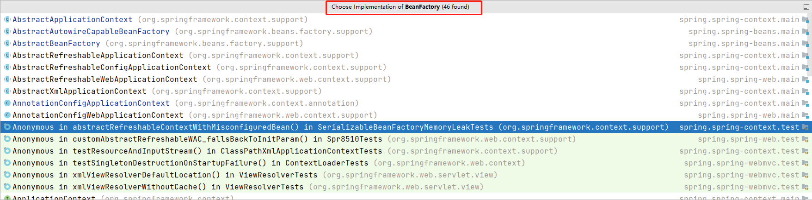
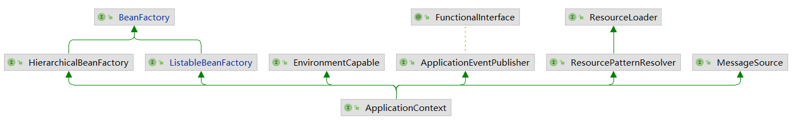
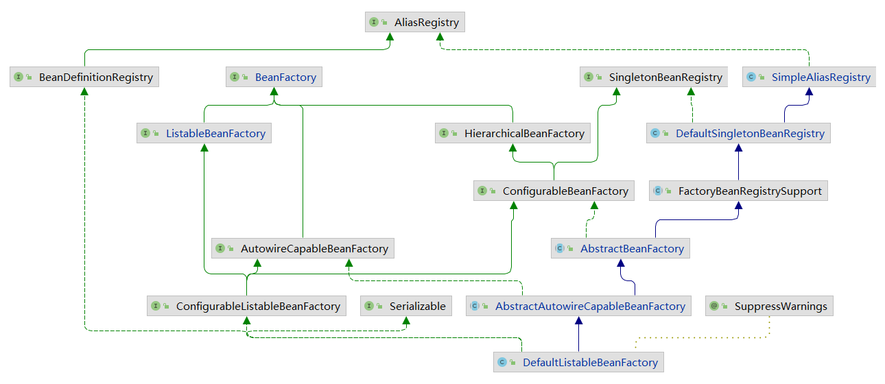
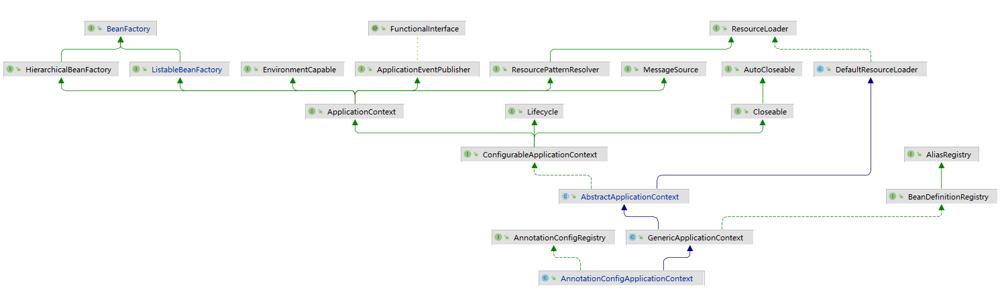
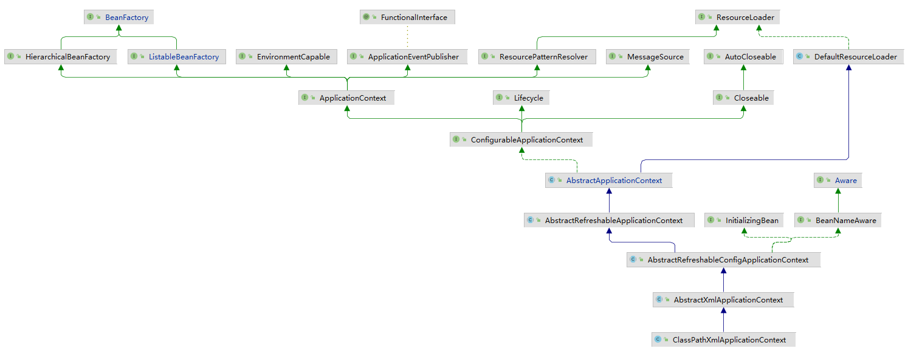

Spring如何创建一个对象
首先来看一个类org.springframework.context.support.ClassPathXmlApplicationContext
这个类就是我们一开始使用Spring的时候会首先认识的一个类，在Spring 3的时候增加了一个org.springframework.context.annotation.AnnotationConfigApplicationContext, 经常使用Spring的人都应该知道第一个类的作用，创建了spring的容器，并指定了扫描路径。其实这两个类的作用基本相同，只不过在一些具体形式上有一些区别，比如前者主要是去读取指定路径下的xml配置文件，后者则是通过java配置类的形式去配置Spring容器。
1 | ClassPathXmlApplicationContext context = new ClassPathXmlApplicationContext("classpath:spring.xml"); |
这里之所以提及AnnotationConfigApplicationContext，是因为我们目前主流使用的SpringBoot就是基于这个类来实现的。
通过以上代码后，我们通常就可以使用context容器对象通过getBean方法去获取对象，在这个过程中就创建了Bean对象。那接下来就了解Spring是如何创建一个对象的。
那么此处有一个问题可以思考下：通过Spring容器获得的Bean和java中new xxx得到的bean有什么区别呢？
Spring中bean的创建生命周期
xxx.class —> 判断使用哪个构造方法 —> 普通对象 —> Aware回调 —> 依赖注入(属性赋值@Autowrite) —> 初始化前(@PostConstruct) —> 初始化 ( InitializingBean)—> 初始化后(AOP) —> AOP之后会生成一个代理对象 —> Bean
- Spring扫描class得到BeanDefinition
- 根据得到的BeanDefinition去生成bean
- 首先根据class推断构造方法
- 根据推断出来的构造方法，反射，得到一个对象（暂时叫做原始对象）
- 填充原始对象中的属性（依赖注入）
- 如果原始对象中的某个方法被AOP了，那么则需要根据原始对象生成一个代理对象
- 把最终生成的代理对象放入单例池（源码中叫做singletonObjects）中，下次getBean时就直接从单例池拿即可
依赖注入
伪代码
1 | // 通过car对象获取其属性，并遍历属性中查找带有Autowired注解的 |
初始化前
@PostConstruct注解，初始化前调用，可以对bean进行一些赋值工作，使用和依赖注入类似
初始化
判断当前bean是否实现了InitializingBean， 通过 instance of InitializingBean判断是否实现接口，实现了该接口后，就将当前bean转换成InitializingBean对象，然后通过该对象去调用实现接口需要重写的afterPropertiesSet()方法
Spring源码中对用的位置 AbstractAutowireCapableBeanFactory.initializeBean(String beanName, Object bean, @Nullable RootBeanDefinition mbd)
1 | public abstract class AbstractAutowireCapableBeanFactory extends AbstractBeanFactory |
大致的过程就是上述的，Spring源码中会比这个更多，支持更多的扩展点，比如Aware、beanPostProcess，就是spring提供的很多的扩展点，以及一些常见主流款框架如何通过扩展点集成到Spring中，见本站链接
手写Spring
本代码中包含了Spring读取配置文件，实现了@ComponentScan注解，读取指定路径下的所有文件。读取所有文件下的Component标记的类。@Scope注解实现简单的单例bean和原型bean。此处的构造方法使用默认的无参构造方法，并 没有实现复杂判断构造方法的功能。生成普通对象后，实现了简单的BeanNameAware扩展点，并实现了基于@Autowrited依赖注入。
实现InitializingBean接口，在创建bean的时候，如果实现了InitializingBean接口，会自动执行afterPropertiesSet方法。
实现BeanPostProcessor接口，bean的后置处理器，两个默认的方法postProcessBeforeInitialization、postProcessAfterInitialization。
理解了bean的创建过程，bean从读取class文件、通过ClassLoader进行类的加载、创建BeanDefinition对象、保存类的Scope属性保存至BeanDefinition、将BeanDefinition放入Map缓存中、在获取bean的时候，通过scope不同属性创建bean，并将创建的bean保存至相应的map缓存池中。创建bean的时候实现了依赖注入（属性赋值）、判断Aware接口、BeanPostProcessor后置处理器初始化前、InitializingBean初始化接口、`BeanPostProcessor后置处理器初始化后。
BeanPostProcessor类似AOP的实现过程。
此处只贴出了Application的代码，具体的接口代码就不贴了，那些就是一些注解和接口，很简单，不会的直接从Spring中取一下也可以。
1 | package com.spring; |
总结
BeanPostProcessor：这属于面向切面的扩展，针对具有默写共同点的类进行统一的扩展。
Aware：面向实现指定接口的类进行扩展。
InitializingBean：面向实现指定接口的类进行扩展。
BeanDefinition
表示Bean定义，BeanDefinition中存在很多属性用来描述一个Bean的特点。通常使用Bean标签（<Bean/>）、@Bean注解、@Component（@Service、@COntroller）等方式来声明一个bean，以上几种方式统称为申明式定义Bean，同时还可以使用编程式定义Bean，在Spring源码中更多的都是通过BeanDefinition来编程式的创建bean的。
BeanDefinitionReader
Spring源码中提供的BeanDefinition读取器，这些我们通常不会使用到，但是在Spring源码中使用的很多。AnnotatedBeanDefinitionReader、XmlBeanDefinitionReader等。
ClassPathBeanDefinitionScanner
扫描器，作用和BeanDefinitionReader类似，可以进行扫描，扫描某个包的路径，对扫描到的类进行解析。
BeanFactory
表示Bean工厂，负责创建Bean，并且提供获取Bean的API。IOCbean工厂的顶级接口 定义一系列对bean的操作。

而ApplicationContext是BeanFactory的一种，在Spring源码中，是这么定义的：

首先，在Java中，接口是可以多继承的，我们发现ApplicationContext继承了ListableBeanFactory和HierarchicalBeanFactory，而ListableBeanFactory和HierarchicalBeanFactory都继承至BeanFactory，所以我们可以认为ApplicationContext继承了BeanFactory，ApplicationContext也是BeanFactory的一种，拥有BeanFactory支持的所有功能，不过ApplicationContext比BeanFactory更加强大，ApplicationContext还继承了其他接口，也就表示ApplicationContext还拥有其他功能，
比如
MessageSource表示国际化，ApplicationEventPublisher表示事件发布，EnvironmentCapable表示获取环境变量，等等，关于ApplicationContext后面再详细讨论。
在Spring的源码实现中，当我们new一个ApplicationContext时，其底层会new一个BeanFactory出来，当使用ApplicationContext的某些方法时，比如getBean()，底层调用的是BeanFactory的getBean()方法。
在Spring源码中，BeanFactory接口存在一个非常重要的实现类是：DefaultListableBeanFactory，也是非常核心的。
所以，我们可以直接来使用DefaultListableBeanFactory，而不用使用ApplicationContext的某个实现类，比如：1
2
3
4
5
6
7
8DefaultListableBeanFactory beanFactory = new DefaultListableBeanFactory();
AbstractBeanDefinition beanDefinition = BeanDefinitionBuilder.genericBeanDefinition().getBeanDefinition();
beanDefinition.setBeanClass(User.class);
beanFactory.registerBeanDefinition("user", beanDefinition);
System.out.println(beanFactory.getBean("user"));
DefaultListableBeanFactory是非常强大的，支持很多功能，可以通过查看DefaultListableBeanFactory的类继承实现结构来看

它实现了很多接口，表示，它拥有很多功能：
AliasRegistry：支持别名功能，一个名字可以对应多个别名BeanDefinitionRegistry：可以注册、保存、移除、获取某个BeanDefinitionBeanFactory：Bean工厂，可以根据某个bean的名字、或类型、或别名获取某个Bean对象SingletonBeanRegistry：可以直接注册、获取某个单例BeanSimpleAliasRegistry：它是一个类，实现了AliasRegistry接口中所定义的功能，支持别名功能ListableBeanFactory：在BeanFactory的基础上，增加了其他功能，可以获取所有BeanDefinition的beanNames，可以根据某个类型获取对应的beanNames，可以根据某个类型获取{类型：对应的Bean}的映射关系HierarchicalBeanFactory：在BeanFactory的基础上，添加了获取父BeanFactory的功能DefaultSingletonBeanRegistry：它是一个类，实现了SingletonBeanRegistry接口，拥有了直接注册、获取某个单例Bean的功能ConfigurableBeanFactory：在HierarchicalBeanFactory和SingletonBeanRegistry的基础上，添加了设置父BeanFactory、类加载器（表示可以指定某个类加载器进行类的加载）、设置Spring EL表达式解析器（表示该BeanFactory可以解析EL表达式）、设置类型转化服务（表示该BeanFactory可以进行类型转化）、可以添加BeanPostProcessor（表示该BeanFactory支持Bean的后置处理器），可以合并BeanDefinition，可以销毁某个Bean等等功能FactoryBeanRegistrySupport：支持了FactoryBean的功能AutowireCapableBeanFactory：是直接继承了BeanFactory，在BeanFactory的基础上，支持在创建Bean的过程中能对Bean进行自动装配AbstractBeanFactory：实现了ConfigurableBeanFactory接口，继承了FactoryBeanRegistrySupport，这个BeanFactory的功能已经很全面了，但是不能自动装配和获取beanNamesConfigurableListableBeanFactory：继承了ListableBeanFactory、AutowireCapableBeanFactory、ConfigurableBeanFactoryAbstractAutowireCapableBeanFactory：继承了AbstractBeanFactory，实现了AutowireCapableBeanFactory，拥有了自动装配的功能DefaultListableBeanFactory：继承了AbstractAutowireCapableBeanFactory，实现了ConfigurableListableBeanFactory接口和BeanDefinitionRegistry接口，所以DefaultListableBeanFactory的功能很强大
ApplicationContext
ApplicationContext是一个接口，实际上也是一个BeanFactory，不过相较于BeanFactory更为强大。
HierarchicalBeanFactory：拥有获取父BeanFactory的功能ListableBeanFactory：拥有获取beanNames的功能ResourcePatternResolver：资源加载器，可以一次性获取多个资源（文件资源等等）EnvironmentCapable：可以获取运行时环境（没有设置运行时环境功能）ApplicationEventPublisher：拥有广播事件的功能（没有添加事件监听器的功能）MessageSource：拥有国际化功能
两个比较重要的实现类
AnnotationConfigApplicationContext

ConfigurableApplicationContext：继承了ApplicationContext接口，增加了，添加事件监听器、添加BeanFactoryPostProcessor、设置Environment，获取ConfigurableListableBeanFactory等功能AbstractApplicationContext：实现了ConfigurableApplicationContext接口GenericApplicationContext：继承了AbstractApplicationContext，实现了BeanDefinitionRegistry接口，拥有了所有ApplicationContext的功能，并且可以注册BeanDefinition，注意这个类中有一个属性(DefaultListableBeanFactorybeanFactory)AnnotationConfigRegistry：可以单独注册某个为类为BeanDefinition（可以处理该类上的@Configuration注解，已经可以处理@Bean注解），同时可以扫描AnnotationConfigApplicationContext：继承了GenericApplicationContext，实现了AnnotationConfigRegistry接口，拥有了以上所有的功能
ClassPathXmlApplicationContext

也是继承了AbstractApplicationContext，但是相对于AnnotationConfigApplicationContext而言，功能没有AnnotationConfigApplicationContext强大，比如不能注册BeanDefinition
国际化
（MessageSource）
资源加载
可以直接利用ApplicationContext获得某个文件的内容
获取运行时环境
事件发布
类型转化
在Spring源码中，有可能需要把String转换成其他类型，所以在Spring源码中提供了一些技术来更方便的对对象进行类型转化
PropertyEditor：JDK中提供的类型转化工具类
ConversionService：Spring中提供的类型转化服务，比propertyEditor更强大
TypeConverter：整合了上面两个功能，Spring源码中使用的
OrderComparator
是Spring所提供的一种比较器，可以用来根据@Order注解或实现Ordered接口来执行比较从而进行排序的工具类。
另外，Spring中还提供了一个OrderComparator的子类：AnnotationAwareOrderComparator，它支持用@Order来指定order值。
BeanPostProcessor
表示Bean的后置处理器，我们可以定义一个或多个BeanPostProcessor
BeanFactoryPostProcessor
表示bean工厂的后置处理器，其实和BeanPostProcessor类似，BeanPostProcessor是干涉Bean的创建过程，BeanFactoryPostProcessor是干涉BeanFactory的创建过程。
FactoryBean
上面提到的BeanPostProcessor是用来干涉Bean的创建过程，但是如果我们想让一个Bean完全由我们来创建，也是可以的，可以通过FactoryBean来创建，这样创建出来的bean不会经过完成的Bean的生命周期，只会经过初始化后，其他的依赖注入等是不会经过的。
通过FactoryBean创建的bean和我们常用的申明式创建的bean主要区别在于是否有完整的Spring的生命周期，自然申明式创建的bean是具备完整的生命周期的。
ExcludeFilter、IncludeFileter
这两个过滤器是Spring扫描过程中用来过滤的，见名知意，ExcludeFilter表示排除过滤器，IncludeFileter表示包含过滤器。
在Spring的扫描逻辑中，默认会添加一个AnnotationTypeFilter给includeFilters，表示默认情况下Spring扫描过程中会认为类上有@Component注解的就是Bean。
MetadataReader、ClassMetadata、AnntationMetadata
在Spring中需要取解析类的信息，比如类名、类中的方法、类上的注解等信息，这些都称之为类的元数据，Spring中对上述信息做了一些封装，提供了一些工具类，可以很方便的获取元数据信息。
SimpleMetadataReader解析类的时候，使用的是ASM技术
为什么要使用ASM技术呢？
Spring启动的时候需要去扫描，如果指定的包路径比较宽泛，那么扫描的类是非常多的，那如果在Spring启动的时候就把这些类全部加载进JVM中，这样不太好，就使用了ASM
扩展：
ASM技术：ASM 是一个 Java 字节码操控框架。它能被用来动态生成类或者增强既有类的功能。ASM 可以直接产生二进制 class 文件，也可以在类被加载入 Java 虚拟机之前动态改变类行为。ASM 从类文件中读入信息后，能够改变类行为，分析类信息，甚至能够根据用户要求生成新类。

...
...
Copyright 2021 sunfy.top ALL Rights Reserved